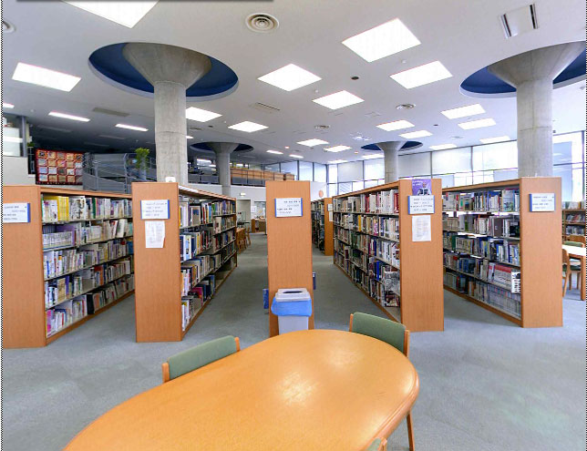

오사카 인터내셔널 스쿨 도서관 · 사진: Steven Hall / Wikimedia Commons, CC BY-SA 3.0
오사카 인터내셔널 스쿨(Osaka International School, OIS) — 한 캠퍼스에 학교가 둘입니다
⚠️ 약칭 혼동 주의 — 이 글의 OIS는 일본 오사카의 학교입니다. 함께 나오는 SIS는 이 캠퍼스의 자매교 센리 인터내셔널 스쿨을 가리키는데, 같은 약칭을 쓰는 학교가 또 있습니다. 서울국제학교(SIS), 셔코우 인터내셔널 스쿨(SIS·중국 선전) 과는 전혀 다른 학교입니다. 한국어 검색 결과가 자주 섞이니 학교 이름을 끝까지 확인하세요.
1. 어떤 학교인가
오사카 인터내셔널 스쿨(Osaka International School of Kwansei Gakuin)은 1991년에 설립된 것으로 알려진 학교로, 오사카부 미노오시에 있습니다. 오사카 북부, 우메다에서 전철로 넉넉잡아 30분 안팎 거리의 주택지 쪽입니다.
교육과정은 국제 바칼로레아(IB) 전 과정입니다. 초등 과정의 PYP, 중등 과정의 MYP, 고등 과정의 디플로마(DP)를 모두 운영하며, 일본에서 IB 세 과정을 모두 갖춘 첫 학교로 알려져 있습니다. 유치 과정부터 12학년까지 한 학교 안에서 이어집니다.
인증은 WASC(미국 서부 학교·대학 협회)이고, 일본 국제학교 협의체(JCIS)와 CIS·EARCOS에 속한 것으로 알려져 있습니다. 학교는 간사이가쿠인(관서학원)과 연결된 법인 체제로 운영됩니다.
※ 학년별 정원·학비·연도별 시험 결과처럼 해마다 달라지는 수치는 이 글에 적지 않았습니다. 학교 요강을 직접 확인하세요.
2. 핵심 — 한 캠퍼스 안에 학교가 둘입니다
여기가 이 학교를 이해하는 출발점입니다. 같은 캠퍼스에 영어로 수업하는 OIS와, 일본어 쪽 과정인 센리 인터내셔널 스쿨(SIS)이 함께 있습니다. 두 학교는 흔히 묶어서 "센리·오사카 인터내셔널 스쿨"로 불립니다.
중요한 것은 섞이는 부분과 갈리는 부분이 따로 있다는 점입니다. 알려진 바로는 중등 학년에서 체육·음악·미술 같은 과목을 두 학교 학생이 함께 듣고, 운동부·연극·합창·밴드·오케스트라 같은 활동도 공동으로 운영됩니다. 고학년에서는 영어와 일본어 과목을 상대 학교 수업으로 들을 수 있는 길도 열려 있는 것으로 알려져 있습니다.
반면 소속 학교·수업 언어·졸업 경로는 갈립니다. 그래서 지원 단계에서 "우리 아이는 어느 쪽에 지원하는가"가 가장 먼저 분명해져야 합니다. 건물이 같다는 이유로 같은 학교라고 생각하면 안내문을 읽을 때부터 어긋납니다.
3. 이 구조가 학교생활에서 바꾸는 것
| 항목 | 영어 전용 국제학교(도쿄권 다수) | 오사카 인터내셔널 스쿨(OIS) |
|---|---|---|
| 수업 언어 | 영어 | 영어(일부 과목은 두 학교 학생이 함께 수강) |
| 학교 안 일본어 노출 | 주로 학교 밖에서 접함 | 같은 캠퍼스에 일본어 과정 학생이 있음 |
| 동아리·운동부 | 학교 단위 | 두 학교 공동 운영으로 알려짐 |
| 고학년 언어 과목 | 학교 개설 과목 안에서 선택 | 상대 학교 수업을 듣는 길이 있는 것으로 알려짐 |
| 가정이 먼저 정할 것 | 학년·편입 시점 | 학년·편입 시점 + 어느 학교에 지원하는가 |
표의 마지막 줄이 실제로 가장 많이 어긋나는 지점입니다. 한국에서 미리 검색해 보신 분들이 캠퍼스 사진과 동아리 소개를 보고 마음을 정한 뒤, 정작 지원 요강은 다른 쪽 것을 읽고 계신 경우가 있습니다.
4. 간사이라는 선택지 — 도쿄와 무엇이 다른가
도쿄권은 ASIJ·니시마치·세이센·세인트메리·아오바 재팬처럼 선택지가 여럿입니다. 학교를 비교해서 고르는 상황이 됩니다.
간사이는 다릅니다. 오사카·고베·교토를 합쳐도 영어로 수업하는 학교 수가 많지 않습니다. 그래서 간사이에서는 질문이 "어디가 더 좋은가"에서 "그 학년에 자리가 있는가"로 바뀝니다. 실무적으로는 이렇게 움직이시는 편이 낫습니다.
· ① 발령이 확정되기 전이라도 먼저 묻는다. 희망 학년과 입학 희망 시기를 알리고 결원 상황을 물어봅니다. 묻는다고 불이익은 없습니다.
· ② 편입 학년을 분명히 전한다. 학년이 올라갈수록 자리가 줄어드는 구간이 있습니다. → 편입·전학 총정리
· ③ 대기가 길어질 경우를 대비해 영어를 미리 쌓는다. 자리가 났을 때 바로 들어갈 수 있는 상태가 되어 있어야 합니다.
생활 쪽 장점도 분명합니다. 시차가 없고(일본은 한국과 같은 시간대) 한국에서 오가기 가깝습니다. 아이가 적응하는 동안 한국 쪽 수업을 그대로 이어 붙이기 가장 쉬운 지역 중 하나입니다.
5. 한국(주재원) 학생이 겪는 어려움
간사이에서 받는 상담 내용은 대체로 셋 중 하나입니다.
· ① 회화는 되는데 과제가 안 된다. IB 과정은 학년이 올라갈수록 쓰는 양이 늘어납니다. 특히 MYP는 과제마다 기준표(루브릭)로 채점되므로, 영어를 잘해도 기준표가 요구하는 문장 구조를 모르면 점수가 올라가지 않습니다. → 형성평가·총괄평가
· ② 수학은 아는데 서술에서 깎인다. 한국에서 계산은 충분히 훈련돼 있는데 영어 용어와 풀이 서술(show your work)에서 막힙니다. → 알지브라 공부법
· ③ 기한 관리가 무너진다. 한 주에 여러 과목의 장기 과제가 겹치는 구조가 처음입니다. → 숙제·과제 관리
여기에 간사이 특유의 사정이 하나 더 붙습니다. 학교가 적다 보니 한국 학생 수도 적습니다. 앞서 겪은 가정에게서 정보를 얻기 어렵고, 아이도 같은 처지의 친구를 만나기까지 시간이 걸립니다. 그래서 초기 몇 달의 학습 공백이 도쿄보다 길어지는 경우를 자주 봅니다.
6. 그래서 이렇게 준비합니다
· 첫째, 학습 영어부터. 생활 영어가 아니라 교과서를 읽고 과제를 쓰는 영어입니다. 지시어(analyse·evaluate·justify)의 뜻과 요구하는 답의 모양을 먼저 익힙니다. → 영어 공부법
· 둘째, 수학은 용어와 서술 중심으로. 진도를 앞서 나가는 것보다 영어로 설명하는 연습이 먼저입니다.
· 셋째, IB 구간을 미리 본다. PYP → MYP → DP는 평가 방식이 단계마다 바뀝니다. 아이가 어느 구간에 합류하는지에 따라 준비 내용이 달라집니다. → 학년 체계 · IB DP 점수
· 넷째, 일본어는 순위를 정해서. 수업은 영어로 이루어지지만 IB는 언어 과목을 담아야 합니다. 한국 학생은 한자어와 어순 덕분에 진입이 빠른 편입니다. → 일본어(JLPT)
7. 오사카의 강점 — 시차 0, 화상과외가 가장 편한 지역
간사이는 한국과 시차가 없습니다. 아이가 학교에서 돌아온 저녁 시간이 한국 선생님의 수업 가능 시간과 그대로 겹칩니다. 주 1~2회 수업을 학기 중에 끊김 없이 이어 가기에 조건이 가장 좋은 지역입니다.
저희가 간사이 가정에 권해 드리는 방식은 단순합니다. 그 과목 수업이 있는 날의 전날 저녁에 수업을 잡고, 과제가 나온 주에 한 번 더 봅니다. 마감 전날에 몰아서 보는 것보다 점수가 훨씬 안정적으로 올라갑니다.
정리
오사카 인터내셔널 스쿨은 1991년 설립된 것으로 알려진 IB 전 과정 학교이고, 자매교와 한 캠퍼스를 쓰는 구조가 가장 큰 특징입니다. 시설·활동은 함께 쓰지만 소속 학교와 졸업 경로는 갈리므로 지원 단계에서 그것부터 분명히 하셔야 합니다. 간사이는 선택지가 적은 지역이라 비교보다 시점이 중요하고, 시차가 없어 한국 수업을 그대로 이어 붙이기 좋은 곳입니다. 30분 무료 수업으로 아이의 현재 영어·수학 상태를 먼저 확인해 보시기 바랍니다. (입학 자격·과정 구성은 해마다 달라질 수 있으니 반드시 학교 요강을 직접 확인하세요.)